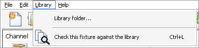
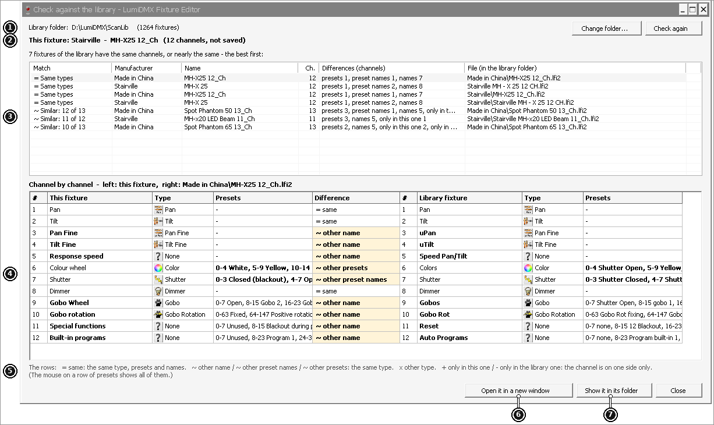

For: Full
Before you make a profile, or after you imported one, it is worth knowing whether your library already has the same fixture - often under another name or another maker (one fixture often carries several brands). Library > Check this fixture against the library (Ctrl+L, or the last button of the toolbar) compares the fixture in the editor with every profile of your library folder, channel by channel.

Library folder... chooses the folder of your profiles; its subfolders are read too. The first check asks for it when it was not chosen yet.

An imported MH-X25 against a library of 1264 profiles: seven alike.
| 1 | The library folder and how many profiles it has; Change folder...; Check again (after a change in the editor, or in the folder). |
| 2 | The fixture in the editor: its name, its channels, whether it is saved. |
| 3 | The profiles of the library that are alike, the closest first (the kinds below), with the channels that differ in words and the file. |
| 4 | Channel by channel - left the fixture in the editor, right the profile selected in 3, with the difference of each row in the middle. The rows that differ are marked, their differing cells in bold. The mouse on a row of presets shows all of them. |
| 5 | What the marks of the rows mean. |
| 6 | Open it in a new window - the selected profile opens in a second editor window, with Save grey until a Save As, so that the library's file is not changed by mistake. |
| 7 | Show it in its folder - opens its folder in Explorer with the file selected. |
| Match | The two profiles have |
|---|---|
| = Identical | the same channels: types, presets (ranges and names) and names. |
| = Same channels | the same types and the same preset ranges; the names may differ. |
| = Same types | the same types of channels in the same order; the presets differ. |
| ~ Similar: n of m | n of the m channels the same, in the same order (at least 3 of 4). |
| ! Same name only | the same maker and name, but other channels: maybe another DMX mode, maybe a mistake. |
| Mark | The channel |
|---|---|
| = same | the same type, presets and names on both sides. |
| ~ other name | the same type and presets; the name of the channel differs. |
| ~ other preset names | the same type and ranges; the names of the presets differ. |
| ~ other presets | the same type; the presets differ. |
| x other type | another type. |
| + only in this one | only the fixture in the editor has it. |
| - only in the library one | only the library's profile has it. |
The marks are written in words and signs; the colour of the rows only repeats them.
Tip: the library is read the first time and kept while the editor is open; each check reads again only the files that are new or changed, so the next checks are quick.